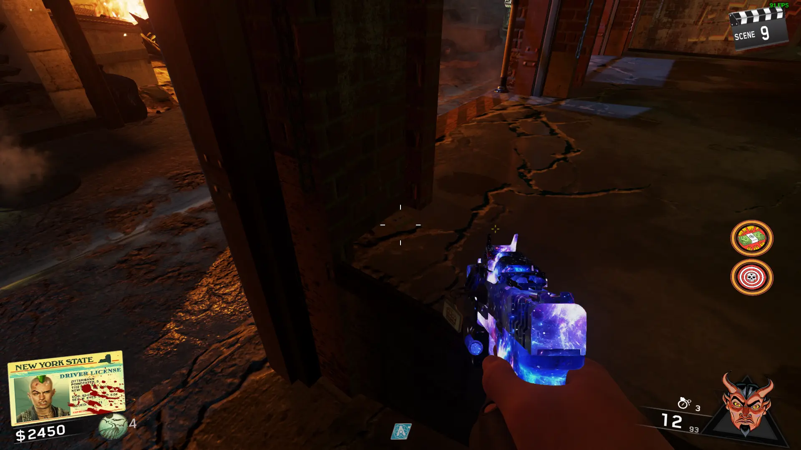
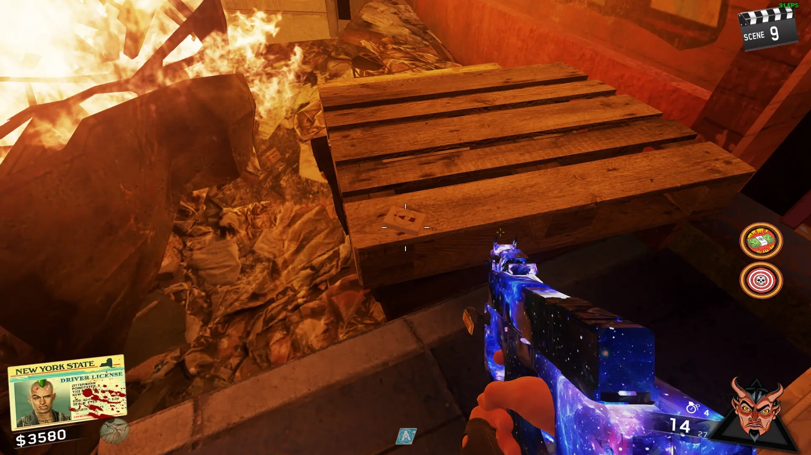
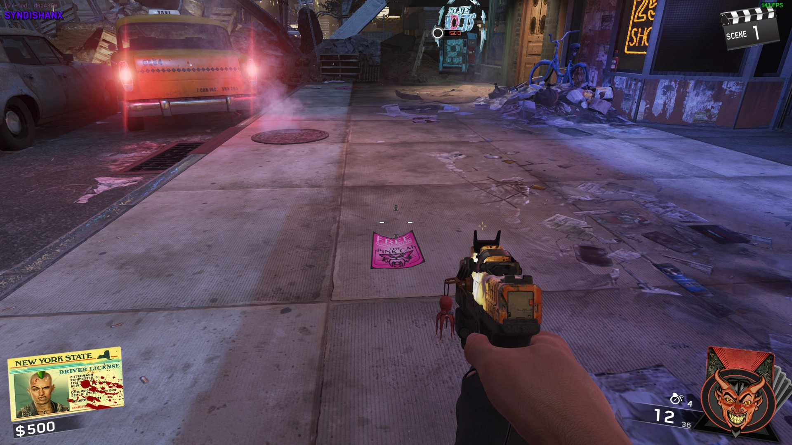
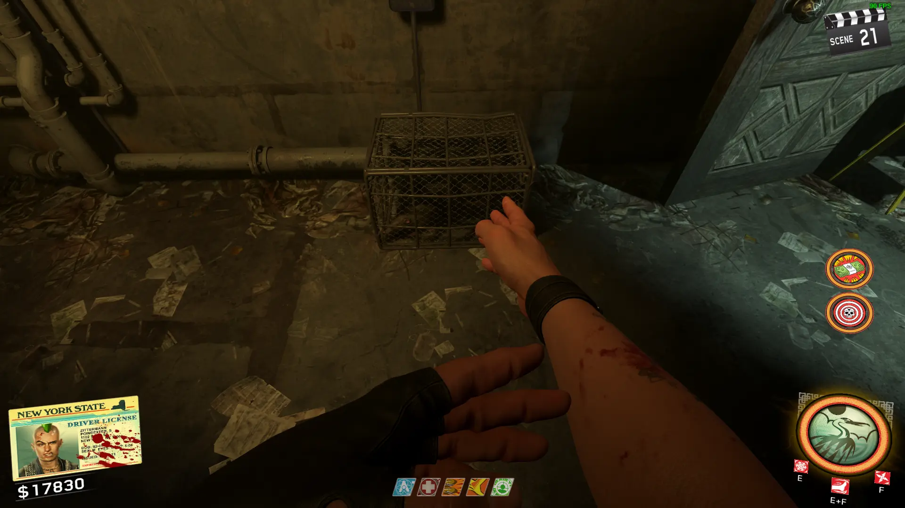
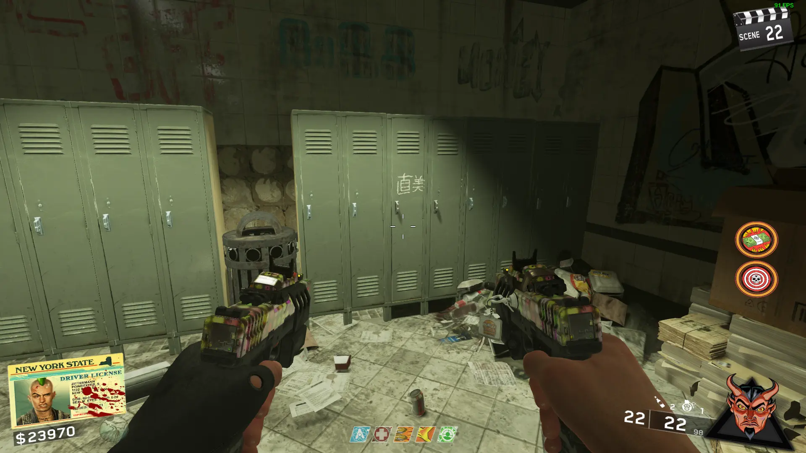
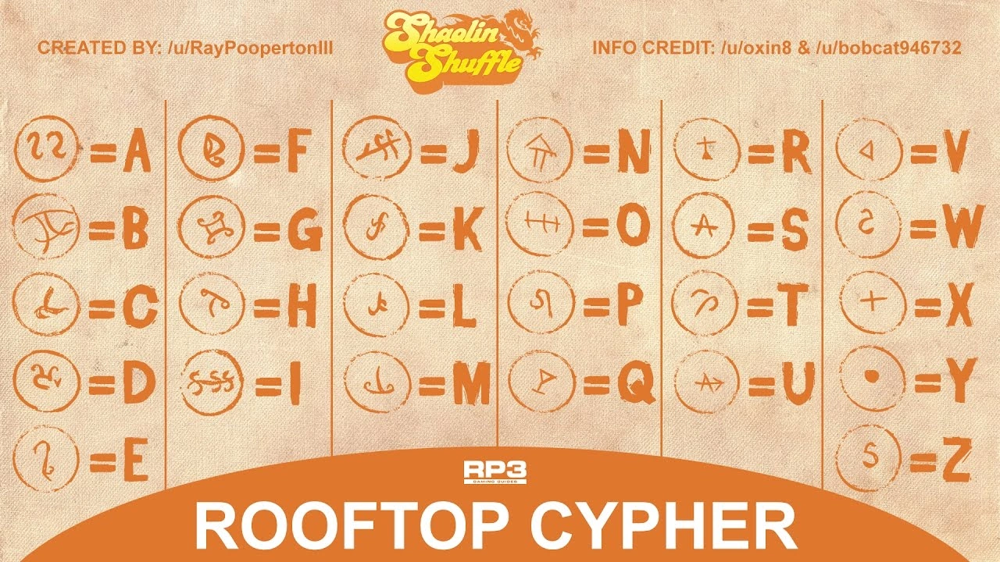

Mahjong Tiles
Find 3 of the same Tiles and place them on their respective Tables to get the Traps
Toy Robot

Boom Box
Lava Lamp

Zom-B-Gone
 
Sentry Turret


Chi's and Upgrades
Crane
-Go to the Dojo and drink from the Crane Gourd
-Melee kill 15 Zombies using the Crane Style
-Kill 25 Zombies using the Shuriken
-Kill 50 Zombies using the Chi Power
-Go to the Dojo and drink from the Crane Gourd
-Melee kill 15 Zombies using the Crane Style
-Kill 25 Zombies using the Shuriken
-Kill 50 Zombies using the Chi Power
Dragon
-Go to the Dojo and drink from the Dragon Gourd
-Melee kill 15 Zombies using the Dragon Style
-Kill 25 Zombies using the Shuriken
-Kill 50 Zombies using the Chi Power
-Go to the Dojo and drink from the Dragon Gourd
-Melee kill 15 Zombies using the Dragon Style
-Kill 25 Zombies using the Shuriken
-Kill 50 Zombies using the Chi Power
Snake
-Go to the Dojo and drink from the Snake Gourd
-Melee kill 15 Zombies using the Snake Style
-Kill 25 Zombies using the Shuriken
-Kill 50 Zombies using the Chi Power
-Go to the Dojo and drink from the Snake Gourd
-Melee kill 15 Zombies using the Snake Style
-Kill 25 Zombies using the Shuriken
-Kill 50 Zombies using the Chi Power
Tiger
-Go to the Dojo and drink from the Tiger Gourd
-Melee kill 15 Zombies using the Tiger Style
-Kill 25 Zombies using the Shuriken
-Kill 50 Zombies using the Chi Power
-Go to the Dojo and drink from the Tiger Gourd
-Melee kill 15 Zombies using the Tiger Style
-Kill 25 Zombies using the Shuriken
-Kill 50 Zombies using the Chi Power
Obtain the Pink Cat Flyer


Obtain the Token
Obtain the Film
Double Pack a Punch
Melee 2 Doors with your Chi Ability
Open Pack-a-Punch, then interact with the Button on the Wall, exit and run to the Door by Blue Bolts
You'll exit at the other Door, turn to the Right and pick up the Fuses

Go to the Subway by the Pink Cat, and place the Fuses on the Track where the Electricity is, after the Train passes, pick them up
Go to PaP Machine and install the Fuses
Katana Melee Weapon
Complete the Main Easter Egg
Go to the Dojo
The Katana will be on the Wall
Nunchucks Melee Weapon
You cannot do this Easter Egg as Pam Grier
Open the whole map, along with all of the Fast Travel Doors
Activate the clock in the Disco at the Reception Desk
Find 2 Items and Melee them while the Time Effect is active


Activate the clock in the Bang Bangs Subway
Find 2 Items and Melee them while the Time Effect is active
Go through the Fast Travel Door to the Left of the Clock for the First item


Activate the clock on a Pallet on the Disco Roof
Find 2 Items and Melee them while the Time Effect is active
Drop into the Disco using the Skylight for thr First Item


Interact with the TV your Character's TV until their Picture shows up
Andre

Sally

Poindexter

A.J.

Punch all 3 Clocks as fast as possible
You will get a Fire Sale that is guaranteed to give you the Nunchucks
Ghost and Skulls
Obtain the Disinfectant and a Rag


Clean the Blood off of the Skull Buster Machine in the Disco
Go to the Disco Roof and find the Missing Mahjong Tiles


Input your hand into this Tool: http://mahjong.onevis.net/
Keep replacing one of the Tiles until you get a Winning Combination
Spell 1972 by shooting at 4 Windows as fast as possible (One try per Round)


Open the Chi Door by Racin' Stripes, Jump on the White Circles until you get the Skull (One try per Round)
Grab the Skull by Jumping into the front of the Train in the Bang Bangs Subway (Actually Kills you btw)

Call 555-0152 on a Payphone in Spawn

Interact with the Machine to Start Playing
Each Round will have Colored Skulls and Mystery Boxes, you have to try to Guess what color each Box is, you are trying to get A Small L Shape, or a Straight Line of 3
If you Fail 3 times, you Lose (Apparently it's bugged and you can't retry in the same game)
When you Complete it, you will get Perkaholic and the Mystery Box will give Single PaP'd Weapons
Main Quest
Talk to Pam after you Unlock the Shuriken's
Find the Cage with the Rat inside, throw a Shuriken to make it move, follow it and make it keep moving until a Yellow Circle appears

Kill Zombies inside the Circle until Ninja Zombies Spawn, kill them and pick up the Key from the Circle (Talk to Pam if Key isn't there)
Go to the Lockers in the Bang Bangs Subway, and open the Locker with a Chinese Symbol on it

Shoot 4 Symbols around the Map

Go back to the Dojo, interact with the Rat King Symbol, defeat the Rat King, then pick up his Eye
Talk to Pam after you Pick up the Eye
Use the Eye to Reveal Symbols, shoot 6 around the Map


Check the Phones in the Spawn, and by Bang Bangs for a Ringing Phone
Answer it and take Note of the Morse Code (Should Translate into 3 Numbers)
0 = ----- 1 = .----- 2 = ..--- 3 = ...-- 4 = ....- 5 = ...... 6 = -..... 7 = --... 8 = ---.. 9 = ----.
Find the Nightmare Summer Poster that has your Numbers and pick it up


Place the Poster on the Spotlight on the Roof of the Disco
Use an Explosive Weapon to destroy the Window with an X on it, then kill the Ninja's that spawn


6 Symbols will Spawn, spell a Word on the Stairway Wall with them by shooting them



Confirmed Words
ACTORS AFTERLIFE ANCESTOR ARCADE
ARTHUR AUDITION BASEMENT BEVERLYHILLS
BLACKCAT BOAT BREEDER BROADWAY
BRUTE BUMPERCARS CHARMS COMICBOOKS
CRANE CRYPTID DANCE DAVIDARCHER
DEATH DIRECTOR DISCO DRAGON
DRCROSS FAIRIES FORGEFREEZE GEYSER
GHETTO HARPOON HIVES INFERNO
KATANA KEVINSMITH KRAKEN KUNGFU
LOSANGELES MCINTOSH MEMORIES MEPHISTOPHELES
NEWYORK NIGHTFALL NUNCHUCKS OBELISK
OCTONIAN PAMGRIER PINKCAT PUNKS
RATKING REALITYTV REDWOODS ROLLERCOASTER
ROLLERSKATES SAMANTHA SHAOLIN SHIELD
SHUFFLE SLASHER SLIDE SNAKE
SPACELAND STAFF SUBWAY TIGER
TREES WEREWOLFPOETS WINONAWYLER YETIEYES
ZAPPER


Talk to Pam, then wait 3 Rounds, you'll get teleported into the Dojo in a Lockdown, complete the Lockdown and pick up the Turnstile on the Sidewalk
Place the Turnstile in the Broken Gate in Spawn


Go to the Alley near Mule Munchies, climb up the Ladder and shoot the Rat King Symbol in the Window at the end of the Scaffolding

Yellow Circles will spawn around the Map, stand in them and kill Zombies inside of them until a Gong Sound plays
Go to the Disco, and interact with the DJ Booth and a Disco Ball will spawn, kill the Zombies with the Disco Ball Powerup with Headshots until it goes away

Go to the Street outside of the Theater, interact with the Rat King Symbol, defeat the Rat King, then pick up his Heart


**PREPARE FOR THE BOSS FIGHT**
Talk to Pam
To start the Boss Fight, go to the Rat King’s Lair and Complete the Round
(Use Chi to break the Crates to buy Perks)
Shoot the Rat King until he Retreats, then start a Phase, Complete it and Repeat 3 Times
Eye Phase
-Use the Eye to reveal Symbols on the Ceiling, shoot the Symbols as fast as you can until a Gong Sound plays
Brain Phase
-Don't kill the Zombie with Blue Eyes, lead the into the Brain, and let them attack ituntil they kill it
Heart Phase
-Acid wilk fill the Outskirts of the Room, kill Zombies with the Acid to crear it
Pick up the Soul Key, and the Ending Cutscene will Play

You can Play as Pam by Entering a Code using the D-Pad in the Lobby Quickly
Up, Up, Right, Left, Down, Left